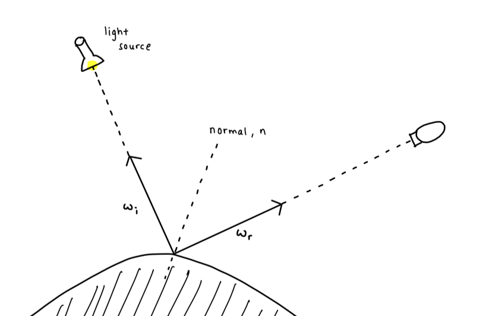

Geometry and Rendering Concepts
Reflective aspect of modelling
What is a BRDF?
A BRDF is a function that returns the amount of light reflected in the view direction for a given incident light direction. BRDF essentially describes how a given object reflects light. We usually denote the function in the form BRDF(ωi,ωr).
image source : https://en.wikipedia.org/wiki/Bidirectional_reflectance_distribution_function#/media/File:BRDF_Diagram.svg
Many rendering models like Cook-Torrance, are examples of BRDFs. Many BRDFs have been proposed other the years: some are designed to model a specific type of material. For example the Oren-Nayar model is suited to model the surface of the moon, which does not reflect light like a diffuse surface would. (diffuse surfaces scatter light at many angle when incident with one ray).
BRDF's have 3 key properties:
- BRDF is a positive function, meaning that for all define inputs of the function, the output is positive.
- BRDF is reciprocal. In other words, BRDF(ωi,ωr)=BRDF(ωr,ωi) if you swap the incoming and outgoing direction in the function, the function returns the same result.
- Finally, a BRDF is energy conserving. This means that the BRDF can not create more light than it receives. This is because an object cannot reflect more light than the amount of light incident on its surface. (unless the surface is emissive, which is an exception)